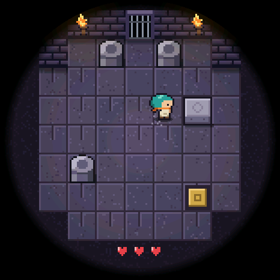
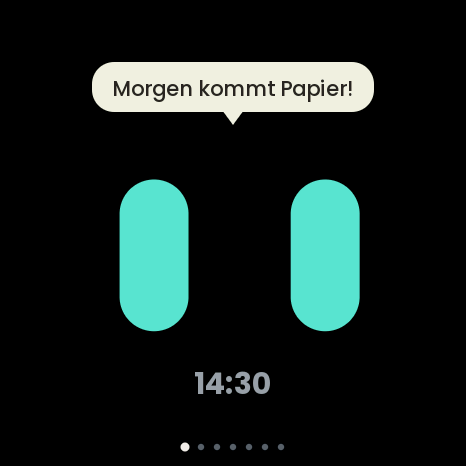

Kleine Welt
Zwei Firmwares für das runde AMOLED-Board – such dir eine aus. Wechseln geht jederzeit, beide Seiten behalten ihre Einstellungen.

Mallorca-Deko
Zehn kleine Mallorca-Szenen für die Wand – mit echtem Tageslauf, Booten, Windmühlen und Sonnenuntergang. Ganz ohne WLAN.

Kumpel
Ein kleiner Kumpel mit Gefühlen – und zum Wischen deine Home-Assistant-Seiten: Heizung, Licht, Schalter, Sensoren, Szenen, Saugroboter.
Installieren
- Chrome oder Edge am Computer öffnen (Web Serial).
- Board per USB-C anschließen.
- Oben die gewünschte Firmware wählen und den Port auswählen.
- Bei „Erase device“ das Kästchen leer lassen → Next → Install.
- Nur beim Kumpel: Danach fragt der Installer nach dem WLAN – eintragen, fertig. Dann auf Visit device klicken.
Spielstände und Einstellungen bleiben erhalten
Beide Firmwares ersetzen nur das Programm. TamaPokes Spielstand und die Ruhmeshalle liegen in eigenen Speicherbereichen, die hier weder gelesen noch beschrieben werden – solange „Erase device“ nicht angehakt ist. Ein Haken dort löscht alles unwiderruflich, auch die Kumpel-Einstellungen.
Der Kumpel speichert WLAN, Home-Assistant-Zugang und Seiten in seinem eigenen Bereich. Wer zwischendurch die Mallorca-Deko oder TamaPoke flasht und später zurückwechselt, findet alles wieder vor.
Kumpel einrichten
- WLAN: direkt im Installer nach dem Flashen. Alternativ zeigt der Kumpel nach 30 Sekunden ohne WLAN das Einrichtungs-WLAN
Kumpel-Setupan – damit verbinden, die Einstellungsseite öffnet sich (sonst192.168.4.1aufrufen). - Einstellungsseite:
http://kumpel.localim Browser öffnen (oder die IP, die der Kumpel anzeigt). - Home Assistant: Adresse eintragen (z. B.
http://homeassistant.local:8123) und ein langlebiges Zugriffstoken (in Home Assistant: Profil → Sicherheit → Token erstellen). Am besten für einen eigenen Benutzer. - Seiten zusammenstellen: Art wählen, Entity aus der Liste suchen, fertig. Bis zu acht Seiten, Reihenfolge frei.
- Reaktionen: Temperatur fürs Frieren, Schlafenszeit und bis zu vier Hinweise für die Sprechblase (z. B. „Morgen kommt Papier!“).
Bedienung
| Waagerecht wischen | nächste bzw. vorige Seite |
| Kumpel antippen | freut sich |
| Kumpel lange drücken | andere Figur: Leuchtaugen, Tröpfchen oder Kiesel |
| Board schütteln | Kumpel ist überrascht |
| Bogen ziehen | Solltemperatur bzw. Helligkeit einstellen |
| Großer Knopf | Licht/Schalter an und aus, Szene oder Skript auslösen |
Nach 45 Sekunden ohne Berührung geht es zurück zum Kumpel. Nachts schläft er und das Display wird gedimmt – Antippen weckt ihn.
Mallorca-Deko: zehn Szenen
Die Cala · Felsbucht · Fischerhafen · Olivenfinca · Bergdorf · Steilküste · Windmühlen · Palma · Strandbar · Felsentor. Alle 10 Minuten blendet die nächste Szene sanft über – das sieht lebendig aus und schont das AMOLED vor Einbrennen.
Antippen (alles freiwillig)
| Waagerecht wischen | nächste bzw. vorige Szene |
| Boot | legt am Steg an, wo es einen gibt (nochmal tippen: legt ab) |
| Meer | ein Fisch springt |
| Himmel | ein Vogel fliegt los |
| Fenster | Licht an/aus (abends) |
| Lange drücken | Uhr stellen: Pfeile tippen (1er-Schritte) oder gedrückt halten (zählt schnell), dann OK |
Jede Szene folgt der echten Uhrzeit: Sonnenauf- und -untergang je nach Monat, goldene Stunde, nachts Mond, Sterne, Fensterlicht und Laternen. Im Februar und März blühen die Mandelbäume. Die Helligkeit wird nachts gedimmt.
Die Uhrzeit kommt aus der eingebauten Uhr des Boards – dieselbe, die TamaPoke benutzt. Stellst du sie hier, gilt sie auch für TamaPoke. Der Kumpel stellt sie automatisch aus dem Internet.